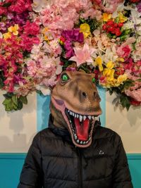

Who am I?
 Well, I am Dinosaur D. Things, nice to meet you. I am a dinosaur and I like doing things. What is it I like to do? Well, anything and everything. What is there to do? Well , anything and everything. With sharpened teeth ready to try the next tasty treat, strangely large hybrid arms (thanks Mum) eqipped to reach the top shelf for the best souvenirs, and laces tied ready to climb the next mountain, I'm set out to each day to see what I can go and do.
I am always asked, "What make a Tyrannasaurus rex want to go do things?", and I say back, "There's cool stuff to do out there, why not?"
Adventures
You name it and I'll be there ready to go do it. From hiking Angel's Landing in Utah to white water rafting in Squamish, BC to seeing the latest Star Wars on opening day, I go and find things to do whether it's on the highest peaks, my my own city, or my own living room.
Food
Food is a huge part of my daily life and the making of a great day. Although dino mcnuggets are my at-home go-to, I'm willing to try a new food at at least once. Caeser salads with chicken, kale smoothies with chicken, or even an eggplant lasagna with bacon bits.
Next Goals
So far, I have done a lot of things in Canada and on the single continent of North America - U.S.A. and Mexico. Looking forward, I am planning on setting sail or jetting off to the other continents of the world and continue to try to do things there as well. Bring back Pangaea.
Further Details
Check out my Photo Album page which is filled with my top favourite things I've done and a couple of my favourite Locations you should visit and go do some things at. Remember friends, get out there and do some things.